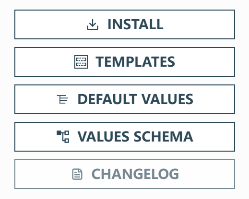

Helm 安装 MySQL 机群
Helm 简介
Helm(http://helm.sh/) 是一个 Kubernetes 应用的包管理工具，类似于 Ubuntu 的 APT 和 CentOS 中的 YUM。 Helm 使用 chart 来封装 kubernetes 应用的 YAML 文件，我们只需要设置自己的参数，就可以实现自动化的快速部署应用。 安装 Helm
安装 Helm
下载安装包：
https://github.com/helm/helm/releases
https://get.helm.sh/helm-v3.10.0-linux-amd64.tar.gz
mv linux-amd64/helm /usr/local/bin/helm
在 K3s 中使用，需要配置环境变量
export KUBECONFIG=/etc/rancher/k3s/k3s.yaml
三大概念
- Chart 代表着 Helm 包。
- 它包含运行应用程序需要的所有资源定义和依赖，相当于模版。
- 类似于 maven 中的
pom.xml、Apt 中的dpkb或 Yum 中的RPM。
- Repository（仓库） 用来存放和共享 charts。
- 不用的应用放在不同的仓库中。
- Release 是运行 chart 的实例。
一个 chart 通常可以在同一个集群中安装多次。
每一次安装都会创建一个新的 release，
release name不能重复。
Helm 仓库
Helm 有一个跟 docker Hub 类似的应用中心(https://artifacthub.io/)，我们可以在里面找到我们需要部署的应用。
安装单节点 Mysql
搜索 mysql 进入包名为 Bitnami的 chart

- INSTALL: 安装方式
- VALUES SCHEMA: 常用参数
# 安装
$ helm install my-mysql --set-string auth.rootPassword=123456 --set primary.persistence.size=1Gi bitnami/mysql
NAME: my-mysqlLAST DEPLOYED: Thu Oct 26 07:41:56 2023NAMESPACE: default
STATUS: deployedREVISION: 1
TEST SUITE: None
NOTES:
CHART NAME: mysql
CHART VERSION: 9.14.1
APP VERSION: 8.0.35
** Please be patient while the chart is being deployed **
Tip:
Watch the deployment status using the command: kubectl get pods -w --namespace default
Services:
echo Primary: my-mysql.default.svc.cluster.local:3306
Execute the following to get the administrator credentials:
echo Username: root
MYSQL_ROOT_PASSWORD=$(kubectl get secret --namespace default my-mysql -o jsonpath="{.data.mysql-root-password}" | base64 -d)
To connect to your database:
1. Run a pod that you can use as a client:
kubectl run my-mysql-client --rm --tty -i --restart='Never' --image docker.io/bitnami/mysql:8.0.35-debian-11-r0 --namespace default --env MYSQL_ROOT_PASSWORD=$MYSQL_ROOT_PASSWORD --command -- bash
2. To connect to primary service (read/write):
mysql -h my-mysql.default.svc.cluster.local -uroot -p"$MYSQL_ROOT_PASSWORD"
# 查看设置
$ helm get values my-mysql
USER-SUPPLIED VALUES:
auth:
rootPassword: "123456"
primary:
persistence:
size: 1Gi
# 删除本次 release
$ helm delete my-mysql
release "my-mysql" uninstalled
注意如果安装失败，需删除之前的 release 名称
# 同上面的delete
$ helm uninstall my-mysql
release "my-mysql" uninstalled
其他命令
#查看chart
helm show chart bitnami/mysql
#查看默认值
helm show values bitnami/mysql
Helm 部署 MySQL 集群
安装过程中有两种方式传递配置数据：
-f(或--values):使用 YAML 文件覆盖默认配置。可以指定多次，优先使用最右边的文件。--set:通过命令行的方式对指定项进行覆盖。 如果同时使用两种方式，则--set中的值会被合并到-f中，但是--set中的值优先级更高。
使用配置文件设置 MySQL 的参数。
auth:
rootPassword: "123456"
# Primary database configuration
primary:
# Enable persistence using Persistent Volume Claims
persistence:
# 主节点持久卷大小
size: 1Gi
# If true, use a Persistent Volume Claim, If false, use emptyDir
enabled: true
# Secondary database configuration
secondary:
# 设置从节点数量
replicaCount: 2
# Enable persistence using Persistent Volume Claims
persistence:
# 从节点持久卷大小
size: 1Gi
# If true, use a Persistent Volume Claim, If false, use emptyDir
enabled: true
# 安装集群必须配置
architecture: replication
通过yaml问卷安装
$ helm install cluster -f values.yaml bitnami/mysql
NAME: cluster
LAST DEPLOYED: Thu Oct 26 07:56:15 2023
NAMESPACE: default
STATUS: deployed
REVISION: 1
TEST SUITE: None
NOTES:
CHART NAME: mysql
CHART VERSION: 9.14.1
APP VERSION: 8.0.35
** Please be patient while the chart is being deployed **
Tip:
Watch the deployment status using the command: kubectl get pods -w --namespace default
Services:
echo Primary: cluster-mysql-primary.default.svc.cluster.local:3306
echo Secondary: cluster-mysql-secondary.default.svc.cluster.local:3306
Execute the following to get the administrator credentials:
echo Username: root
MYSQL_ROOT_PASSWORD=$(kubectl get secret --namespace default cluster-mysql -o jsonpath="{.data.mysql-root-password}" | base64 -d)
To connect to your database:
1. Run a pod that you can use as a client:
kubectl run cluster-mysql-client --rm --tty -i --restart='Never' --image docker.io/bitnami/mysql:8.0.35-debian-11-r0 --namespace default --env MYSQL_ROOT_PASSWORD=$MYSQL_ROOT_PASSWORD --command -- bash
2. To connect to primary service (read/write):
mysql -h cluster-mysql-primary.default.svc.cluster.local -uroot -p"$MYSQL_ROOT_PASSWORD"
3. To connect to secondary service (read-only):
mysql -h cluster-mysql-secondary.default.svc.cluster.local -uroot -p"$MYSQL_ROOT_PASSWORD"
获取创建过程
$ kubectl get pod --watch
NAME READY STATUS RESTARTS AGE
cluster-mysql-primary-0 0/1 ContainerCreating 0 2m33s
cluster-mysql-secondary-0 0/1 Running 0 2m33s
cluster-mysql-primary-0 0/1 Running 0 2m48s
cluster-mysql-primary-0 0/1 Running 0 3m34s
cluster-mysql-primary-0 1/1 Running 0 3m34s
cluster-mysql-secondary-0 0/1 Running 1 (3s ago) 4m22s
cluster-mysql-secondary-0 0/1 Running 1 (19s ago) 4m38s
cluster-mysql-secondary-0 1/1 Running 1 (29s ago) 4m48s
cluster-mysql-secondary-1 0/1 Pending 0 0s
cluster-mysql-secondary-1 0/1 Pending 0 22s
cluster-mysql-secondary-1 0/1 ContainerCreating 0 22s
cluster-mysql-secondary-1 0/1 Running 0 2m9s
$ kubectl get all
NAME READY STATUS RESTARTS AGE
pod/cluster-mysql-primary-0 1/1 Running 0 8m20s
pod/cluster-mysql-secondary-0 1/1 Running 1 (4m1s ago) 8m20s
pod/cluster-mysql-secondary-1 1/1 Running 0 3m32s
NAME TYPE CLUSTER-IP EXTERNAL-IP PORT(S) AGE
service/kubernetes ClusterIP 10.43.0.1 <none> 443/TCP 25h
service/cluster-mysql-primary-headless ClusterIP None <none> 3306/TCP 8m20s
service/cluster-mysql-secondary-headless ClusterIP None <none> 3306/TCP 8m20s
service/cluster-mysql-secondary ClusterIP 10.43.119.2 <none> 3306/TCP 8m20s
service/cluster-mysql-primary ClusterIP 10.43.131.119 <none> 3306/TCP 8m20s
NAME READY AGE
statefulset.apps/cluster-mysql-primary 1/1 8m21s
statefulset.apps/cluster-mysql-secondary 2/2 8m21s
以上可以看到分别为主从库创建了无头和有头的 service，主从库分别用 statefulset 创建
按照前面安装成功后说明操作：
# 配置root用户密码环境变量
$ MYSQL_ROOT_PASSWORD=$(kubectl get secret --namespace default cluster-mysql -o jsonpath="{.data.mysql-root-password}" | base64 -d)
# 创建mysql 客户端pod
kubectl run cluster-mysql-client --rm --tty -i --restart='Never' --image docker.io/bitnami/mysql:8.0.35-debian-11-r0 --namespace default --env MYSQL_ROOT_PASSWORD=$MYSQL_ROOT_PASSWORD --command -- bash
If you don't see a command prompt, try pressing enter.
I have no name!@cluster-mysql-client:/$
- 在 pod 中连接主库测试
$ mysql -h cluster-mysql-primary.default.svc.cluster.local -uroot -p"$MYSQL_ROOT_PASSWORD"
mysql: [Warning] Using a password on the command line interface can be insecure.
Welcome to the MySQL monitor. Commands end with ; or \g.
Your MySQL connection id is 133
Server version: 8.0.35 Source distribution
Copyright (c) 2000, 2023, Oracle and/or its affiliates.
Oracle is a registered trademark of Oracle Corporation and/or its
affiliates. Other names may be trademarks of their respective
owners.
Type 'help;' or '\h' for help. Type '\c' to clear the current input statement.
mysql> CREATE DATABASE test;
Query OK, 1 row affected (0.07 sec)
mysql> CREATE TABLE test.message (message VARCHAR(250));
Query OK, 0 rows affected (0.12 sec)
mysql> INSERT INTO test.message VALUES ('hello');
Query OK, 1 row affected (0.05 sec)
mysql> exit
Bye
- 在 pod 中连接从库测试
$ mysql -h cluster-mysql-secondary.default.svc.cluster.local -uroot -p"$MYSQL_ROOT_PASSWORD"
mysql: [Warning] Using a password on the command line interface can be insecure.
Welcome to the MySQL monitor. Commands end with ; or \g.
Your MySQL connection id is 159
Server version: 8.0.35 Source distribution
Copyright (c) 2000, 2023, Oracle and/or its affiliates.
Oracle is a registered trademark of Oracle Corporation and/or its
affiliates. Other names may be trademarks of their respective
owners.
Type 'help;' or '\h' for help. Type '\c' to clear the current input statement.
mysql> SELECT * FROM test.message;
+---------+
| message |
+---------+
| hello |
+---------+
1 row in set (0.02 sec)
参考文档： https://helm.sh/zh/docs/intro/install/ https://helm.sh/zh/docs/intro/using_helm/